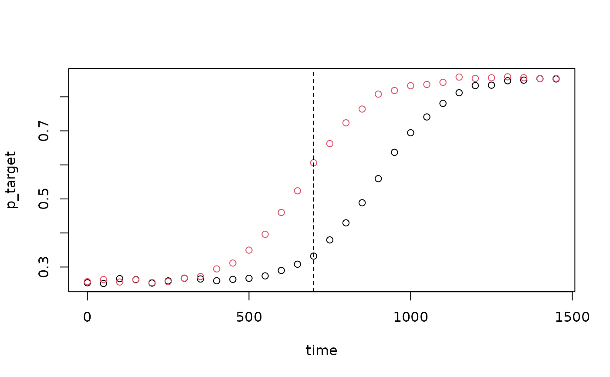

Listeners hear The boy will eat / move the cake while looking at four objects: the target (a cake, the only edible object), a phonological competitor (a cage) and two unrelated distractors. After a restrictive verb (eat) they look at the target before the noun is heard; while the noun unfolds, the competitor briefly attracts looks too. Eye-tracker samples on each object in 50 ms bins from verb onset; the noun starts at 700 ms. 32 participants, 24 items, 12 per condition (two counterbalanced lists).
Format
A tibble with 23040 rows and 10 columns:
- participant
Participant ID,
P01toP32.- list
Counterbalancing list, 1 or 2.
- item
Item ID,
i01toi24.- condition
"non-restrictive"or"restrictive"verb.- time
Start of the 50 ms bin, ms from verb onset, 0 to 1450.
- target, competitor, distractor_1, distractor_2
Eye-tracker samples on each object in this bin; they add up to
samples.- samples
Samples per bin: always 25 (500 Hz).
Details
True model: on the logit scale, looks to the target rise from chance (0.25) to about 0.88 along a logistic curve with width 90 ms, centred at 700 ms after restrictive and 930 ms after non-restrictive verbs. By-participant variation in the centre (SD 80 ms) and in the final level (SD 0.3 logits); by-item variation in the centre (SD 40 ms). Within a trial, deviations are AR(1) with rho 0.9. Of the remaining samples, the competitor gets a third plus a bump of up to 25 percentage points centred at 950 ms (SD about 100 ms); the two distractors split the rest evenly. The timing follows Altmann and Kamide (1999, Experiment 1): the noun began about 700 ms after the verb, and the first saccade to the target came 611 ms after the onset of eat and 838 ms after move. Their scenes had no phonological competitor; it is added here, and its timing, the participants and the looks are simulated.
References
Altmann, G. T. M. & Kamide, Y. (1999). Incremental interpretation at verbs: Restricting the domain of subsequent reference. Cognition, 73(3), 247-264. doi:10.1016/S0010-0277(99)00059-1
Examples
visual_world$p_target <- visual_world$target / visual_world$samples
looks <- aggregate(p_target ~ condition + time, data = visual_world, FUN = mean)
plot(p_target ~ time, data = looks, col = condition)
abline(v = 700, lty = 2)

looks[looks$time == 700, ]
#> condition time p_target
#> 29 non-restrictive 700 0.3320833
#> 30 restrictive 700 0.6062500